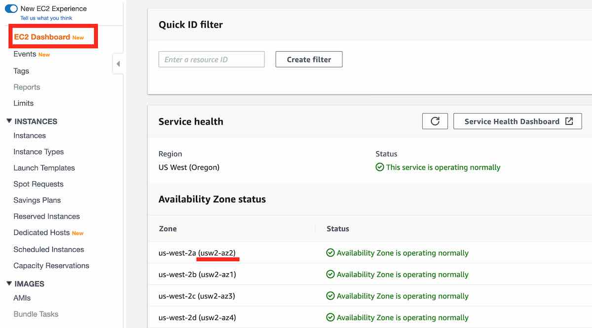

An IT consultant is helping a small business revamp their technology infrastructure on the AWS Cloud. The business has two AWS accounts and all resources are provisioned in the us-west-2 region. The IT consultant is trying to launch an EC2 instance in each of the two AWS accounts such that the instances are in the same Availability Zone of the us-west-2 region. Even after selecting the same default subnet (us-west-2a) while launching the instances in each of the AWS accounts, the IT consultant notices that the Availability Zones are still different. As a solutions architect, which of the following would you suggest resolving this issue?
একজন IT consultant একটি ছোট business-কে AWS Cloud-এ তাদের technology infrastructure নতুন করে সাজাতে সাহায্য করছেন। business-টির দুটি AWS account আছে এবং সব resource us-west-2 region-এ provision করা। IT consultant দুটি AWS account-এর প্রতিটিতে একটি করে EC2 instance launch করার চেষ্টা করছেন, যাতে instance-গুলো us-west-2 region-এর একই Availability Zone-এ থাকে। প্রতিটি AWS account-এ instance launch করার সময় একই default subnet (us-west-2a) বেছে নেওয়ার পরেও IT consultant দেখলেন যে Availability Zone-গুলো এখনও আলাদা। একজন solutions architect হিসেবে, এই সমস্যা সমাধানের জন্য আপনি নিচের কোনটি পরামর্শ দেবেন?
Correct: B. Why it is right
AZ name (jemon us-west-2a) protita AWS account e alada physical AZ e map hote pare - AWS eta account onujayi mix kore jate load sob AZ e chhoray. Tai duita account e same name dile-o physical AZ alada hote pare.
AZ ID (jemon usw2-az2) sob account e eki physical AZ bujhay. Tai cross-account e same AZ chaile AZ ID mile subnet bachhai koro. Course e AZ name (ap-southeast-2a) dekhay (PDF p. 21), kintu ei mapping ta porano hoy na.
Why the other options are wrong
- A. AWS Support lagbe na; AZ ID dekhe nijei same physical AZ khuje paoa jay.
- C. Default subnet AZ name e bandha, ar AZ name account bhede alada physical AZ hote pare - tai eta diye unique identify hoy na.
- D. Default VPC puro region jure thake (sob AZ), tai eta diye kono specific AZ identify kora jay na.
Keyword: Same name us-west-2a, tobu AZ alada, two AWS accounts → AZ ID (usw2-az2)
Original explanation (English)
Correct option: "Use AZ ID to uniquely identify the Availability Zones across the two AWS Accounts"
An Availability Zone is represented by a region code followed by a letter identifier; for example, us-east-1a. To ensure that resources are distributed across the Availability Zones for a region, AWS maps Availability Zones to names for each AWS account. For example, the Availability Zone us-west-2a for one AWS account might not be the same location as us-west-2a for another AWS account.
To coordinate Availability Zones across accounts, you must use the AZ ID, which is a unique and consistent identifier for an Availability Zone. For example, usw2-az2 is an AZ ID for the us-west-2 region and it has the same location in every AWS account.
Viewing AZ IDs enables you to determine the location of resources in one account relative to the resources in another account. For example, if you share a subnet in the Availability Zone with the AZ ID usw2-az2 with another account, this subnet is available to that account in the Availability Zone whose AZ ID is also usw2-az2.
You can view the AZ IDs by going to the service health section of the EC2 Dashboard via your AWS Management Console.
AZ IDs for Availability Zones

Incorrect options: "Use the default VPC to uniquely identify the Availability Zones across the two AWS Accounts" - A virtual private cloud (VPC) is a virtual network dedicated to your AWS account. It is logically isolated from other virtual networks in the AWS Cloud. Since a VPC spans an AWS region, it cannot be used to uniquely identify an Availability Zone. Therefore, this option is incorrect.
"Use the default subnet to uniquely identify the Availability Zones across the two AWS Accounts" - A subnet is a range of IP addresses in your VPC. A subnet spans an Availability Zone of an AWS region. The default subnet representing the Availability Zone us-west-2a for one AWS account might not be the same location as us-west-2a for another AWS account. Therefore, this option is incorrect.
"Reach out to AWS Support for creating the EC2 instances in the same Availability Zone across the two AWS accounts" - Since the AZ ID is a unique and consistent identifier for an Availability Zone, there is no need to contact AWS Support. Therefore, this option is incorrect.
Reference: https://docs.aws.amazon.com/AWSEC2/latest/UserGuide/using-regions-availability-zones.html
References: https://docs.aws.amazon.com/AWSEC2/latest/UserGuide/using-regions-availability-zones.html